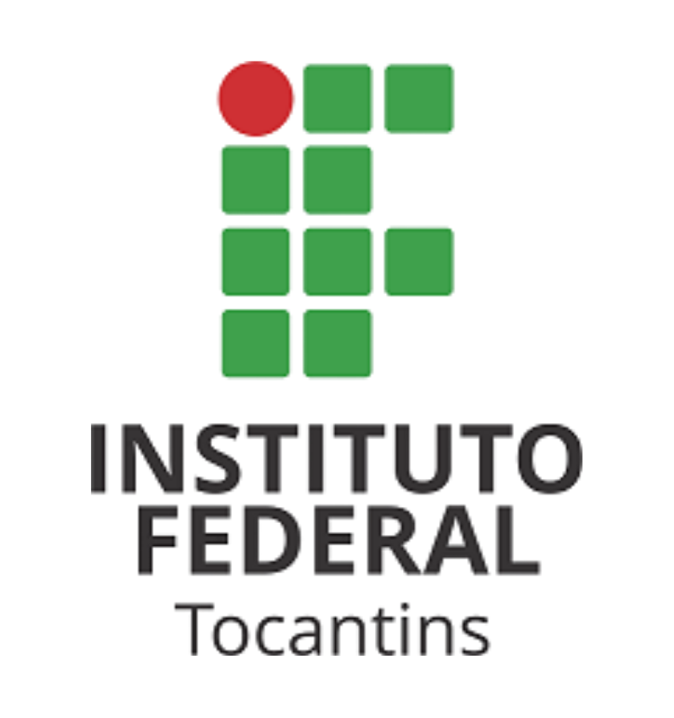
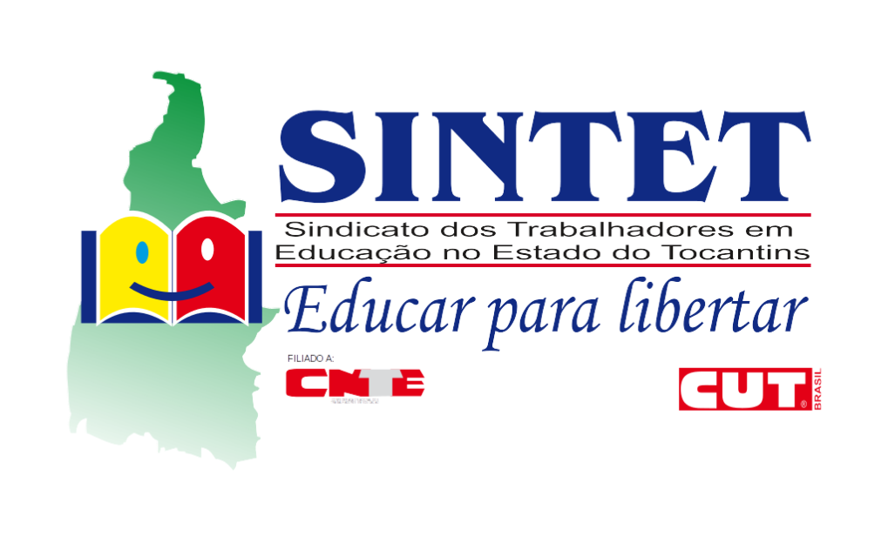
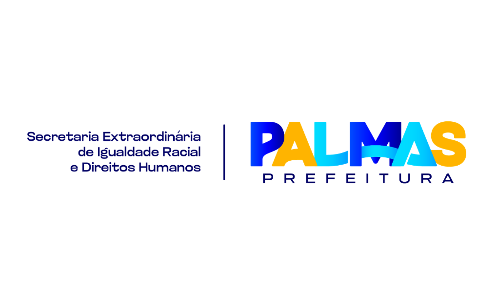
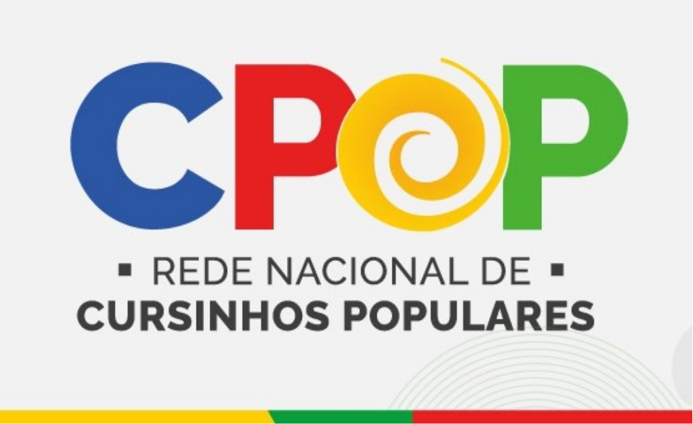

Nossa Metodologia
Educação popular baseada no diálogo e na construção coletiva do conhecimento. Aprender juntos, compartilhar saberes e construir caminhos até a universidade.
Vagas abertas 2026
Um cursinho popular construído pela comunidade para transformar realidades. Educação gratuita, transformadora e comprometida com a democratização do acesso ao ensino superior.
Educação popular baseada no diálogo e na construção coletiva do conhecimento. Aprender juntos, compartilhar saberes e construir caminhos até a universidade.
Aulas no período noturno, pensadas para quem trabalha ou estuda durante o dia.
Apoio coletivo, troca de saberes, cuidado psicossocial e um ambiente que acredita no seu sonho.
Nascemos da força da comunidade e do compromisso com a educação popular. Mais do que um cursinho, somos uma rede de pessoas voluntárias que acredita no potencial da periferia.
Nosso projeto promove transformação social por meio da educação e cultura, oferecendo suporte pedagógico, cuidado psicossocial e conhecimento para superarmos os desafios e alcançarmos a universidade.
Aqui ninguém caminha sozinha/o: cada educador e educadora, cada apoio, cada abraço é voluntário, porque acreditamos que educar é um ato de amor e compromisso com o futuro.
Siga estes passos para participar do cursinho.
Preencha o formulário com seus dados quando as inscrições estiverem abertas.
As vagas são organizadas priorizando quem mais precisa.
Você será avisado sobre sua vaga e orientações para início.
Participe das aulas e faça parte da comunidade.
Voluntariado
Qualquer pessoa pode ser voluntária: para ensinar, acolher ou fortalecer os bastidores.
Quero ser voluntárioAcompanhe as publicações recentes da nossa comunidade.
"Sou muito grata por ter tido a oportunidade de vivenciar e aprender, que me fez mudar o olhar para a educação e aos jovens de hoje, sinto mais esperança e forças pra continuar o meu caminho, sabendo que o nosso futuro pode sim estar em excelentes mãos.
Raphaela Educadora Popular VoluntáriaAqui encontrei apoio, incentivo e pessoas que realmente acreditam no nosso potencial.
Rxxxxxxx Oxxxx Estudante de xxxxxxxxxSer professora voluntária aqui é mais do que ensinar conteúdo. É fazer parte de um projeto que transforma vidas e amplia oportunidades.
Bxxxxxx Jxxxxxx Professora Voluntária



Se você quer estudar conosco, ser voluntário ou apoiar o projeto de alguma forma, estamos aqui para te ouvir.
Fale com a gente pelo WhatsApp e dê o próximo passo.
Fale conosco pelo WhatsAppÉ uma iniciativa de educação popular, gratuita, voluntária e comunitária, voltada à preparação para o ENEM e outros processos seletivos de acesso ao ensino superior. O projeto busca ampliar oportunidades para jovens e adultos da periferia, oriundos da rede pública e em situação de vulnerabilidade social.
Preparar pessoas da periferiapara o ingresso no ensino superior, por meio de uma educação integral que combina preparação acadêmica com práticas culturais, vivências comunitárias e acolhimento psicossocial.
O Cursinho Popular Raimunda Quebradeira de Coco é feito para estudantes que sonham com a universidade e que, historicamente, têm menos oportunidades de acesso.
Nossa seleção prioriza:
"Não. O cursinho é totalmente gratuito, seguindo princípios da educação popular e inclusiva. Com possibilidade de receber auxílio permanência para te ajudar nessa caminhada.
O cursinho conta com educadoras e educadores voluntários, que podem ter formação acadêmica, artística, cultural ou experiência nas áreas em que atuam, contribuindo de forma colaborativa com o projeto.
Você pode se inscrever a qualquer momento durante o ano todo. Acesse o link do formulário, preencha seus dados pessoais, informe sua situação familiar e de renda. Mesmo após o início das aulas, podem surgir vagas remanescentes e você será chamado(a) conforme a ordem de prioridade. Nossa equipe poderá entrar em contato por WhatsApp para esclarecer dúvidas e solicitar documentos. O resultado será divulgado no site. Se tiver dificuldades, é só chamar a gente pelo WhatsApp.
Sim. O cursinho também abre chamadas para voluntários, especialmente educadores/as em todas as áreas de conhecimento, artístas, produtores de cultura e colaboradores que desejam contribuir com a educação popular.